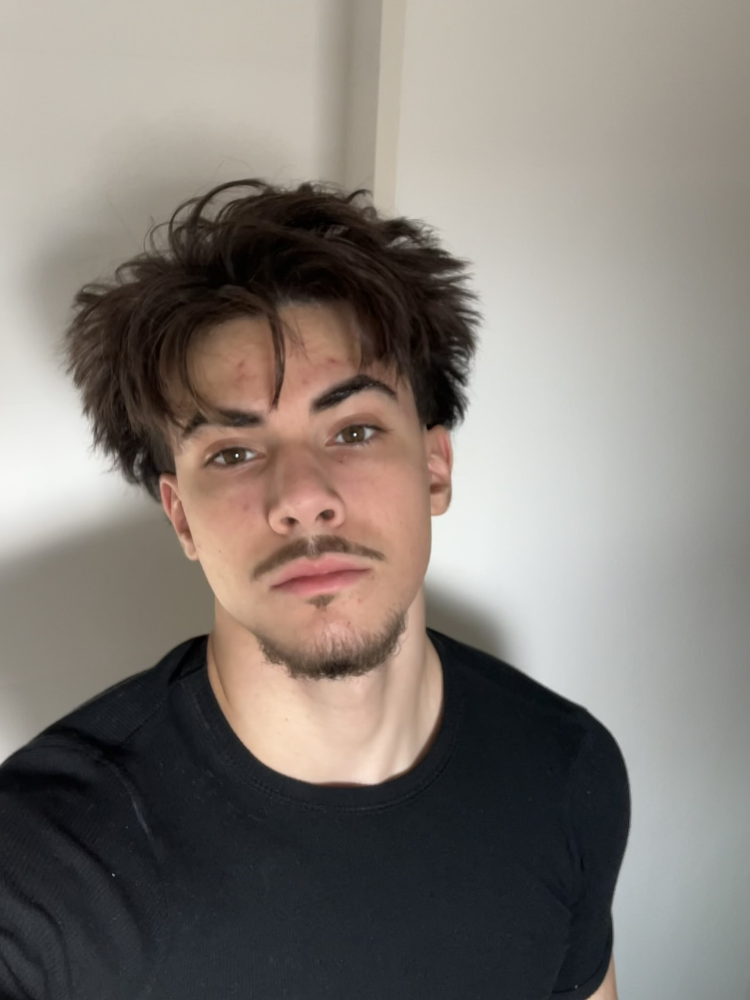

Sou uma pessoa que não gosta de deixar as coisas para depois. Mesmo quando tenho tempo de sobra, prefiro realizar logo as tarefas para me livrar delas. Porém, ao mesmo tempo, acabo procrastinando. Quando essa vontade aparece, penso que sempre existe alguém que não perdeu à procrastinação, e isso me faz querer continuar para não “ficar para trás”.
É como se houvesse uma competição na minha cabeça, gosto da sensação de já ter concluído algo enquanto outros ainda estão fazendo. Também sou um pouco ciumento, quando percebo que estou ficando atrás de alguém em algum aspecto, esforço-me ainda mais para tentar passar, mas não mostro o meu lado ciumento, tento sempre ser respeitoso do meu jeito, mas tendo a me inspirar em aspectos de outras pessoas e também dos meus amigos nas partes boas deles.
Cleyton Rodrigues Pedroza
11/10/2008

Meu memorial
Espero que, com a minha capacidade de resolver problemas, assumir responsabilidades e fazer o que precisa ser feito sem ficar reclamando, eu consiga me tornar um profissional de sucesso no futuro. Acredito que essa maneira de encarar as tarefas, sempre com disciplina e foco, pode me ajudar a construir uma carreira sólida e alcançar tudo o que eu planejo para mim.
Interesses
Gosto bastante de jogar Clash Royale e de passar meu tempo vendo TikTok. Tenho bastante disciplina para ir à academia, tanto que raramente falto. Também gosto de jogar outros jogos, embora não tanto quanto antes, já que meu ânimo para isso diminuiu ao longo do tempo. Além disso, gosto de sair para festas — não que eu vá com muita frequência, mas sempre que da vou, e aproveito bastante.
Objetivos
Tenho como objetivo atingir várias metas ao longo da minha vida. A cada fase que passa, novos objetivos surgem, e isso acaba trazendo ainda mais metas para eu buscar. Não costumo ter um único objetivo fixo o tempo todo; estou sempre criando novas metas para alcançar, conforme vou evoluindo e entendendo melhor o que quero para o meu futuro.